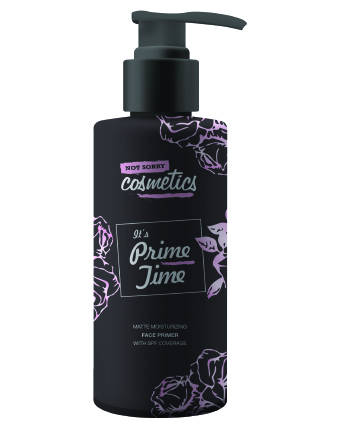

IT'S PRIME TIME™
MATTE FACE PRIMER
ADD TO CART
It's Prime Time™ absorbs oil and controls shine all day. So pores look smaller – your skin smooth. (For all skin types.)
It's Prime Time™ Technology to instantly diminish the appearance of pores and all-day-shine control, our magnificent, multi-action primer helps hide imperfections, even out your skin tone and reduce the appearance of redness. It also helps makes your make up last longer and, with vitamin E, leaves you good to glow.